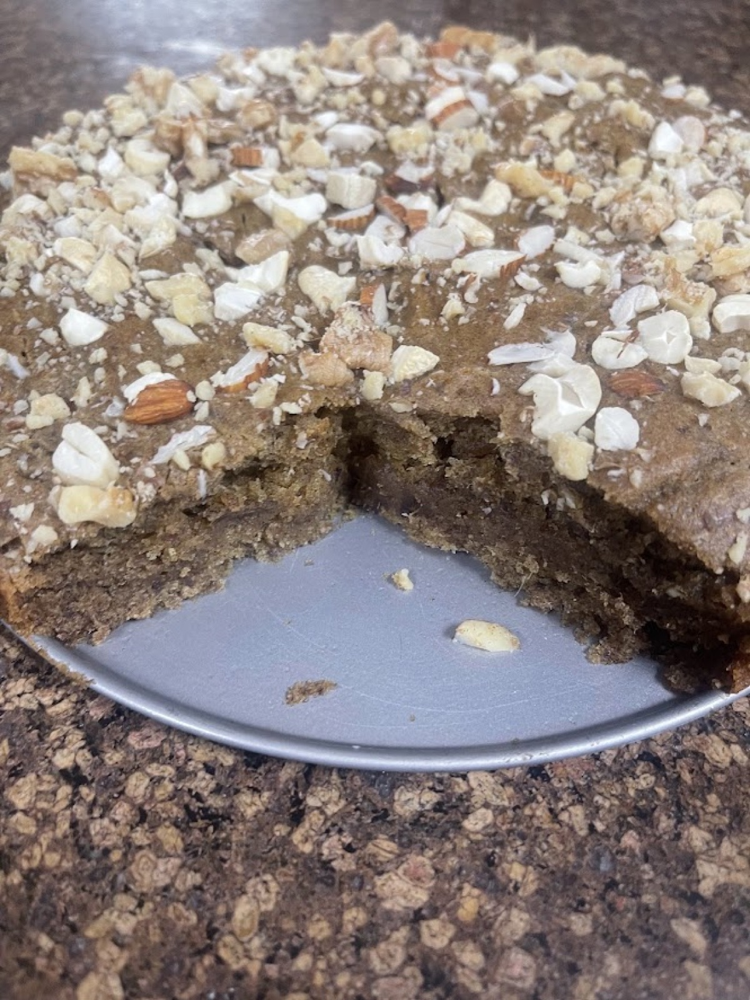

The no-sugar, no-egg cake that saves the celebration. Built from almonds for richness and dates for sweetness — nothing that would leave Vedhica's mum out of her own party.

Preheat the oven and grease a small cake tin.
Blend the dates with a splash of warm water until it turns into a smooth paste.
Mix the date paste with the yogurt (or mashed banana), melted butter, and vanilla.
Fold in the almond flour, baking powder, and salt, and stir just until it comes together.
Pour the batter into the tin, sprinkle the chopped almonds on top, and bake until a toothpick comes out clean.
Let it cool all the way before slicing. It holds together so much better once it's rested.